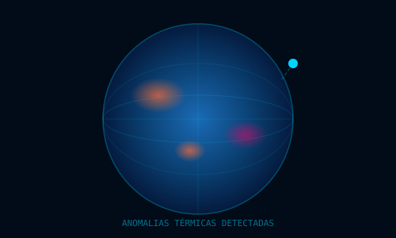

Satélites da NASA e da rede Starlink unidos para vigiar o planeta. Detectamos aquecimento global e prevemos desastres naturais antes que aconteçam.
O aquecimento global intensifica desastres naturais. Sem monitoramento integrado, as respostas chegam tarde demais.

Anomalias térmicas globais crescem sem monitoramento contínuo e distribuído.
Tufões, enchentes e vulcões causam perdas massivas por falta de previsão.
Fontes de dados climáticos existem, mas não são cruzadas de forma inteligente.
Sem análise preditiva, órgãos de defesa civil reagem ao invés de prevenir.
Duas das maiores redes de dados do planeta trabalhando juntas para monitorar o meio ambiente em escala global.
Mais de 5.700 satélites em órbita baixa captam variações de temperatura em regiões remotas de todo o globo.
SpaceX · LEOEarth Observatory Natural Event Tracker registra em tempo real tufões, incêndios, vulcões e tempestades no mundo.
NASA · Open DataAlgoritmos cruzam dados de temperatura com eventos registrados, identificando padrões e antecipando riscos.
Machine LearningMapa interativo exibe anomalias térmicas e alertas ativos, acessível por autoridades e cidadãos via web.
React · MapboxMais do que monitorar, queremos transformar dados climáticos em decisões que salvam vidas.
Unificar dados da Starlink e da NASA em uma plataforma única e acessível.
Detectar anomalias térmicas em tempo real em qualquer região do planeta.
Cruzar dados climáticos com eventos extremos para antecipar riscos antes que ocorram.
Notificar autoridades e a população antes que o desastre aconteça.
Do cidadão comum às grandes agências ambientais, o OrbitWatch serve quem precisa de dados confiáveis para agir.
Órgãos que coordenam respostas a desastres e evacuações de emergência.
Cientistas climáticos que estudam padrões de mudança ambiental global.
Jornalistas que cobrem eventos climáticos extremos ao redor do mundo.
Organizações que atuam em regiões de risco climático elevado.
Cidadãos de regiões vulneráveis que precisam de alertas preventivos.
Dados integrados geram mais do que visualizações — geram capacidade de agir antes que o pior aconteça.
A integração entre causas climáticas e eventos naturais torna o sistema preditivo, não apenas reativo.
Alertas horas antes do evento permitem evacuação e preparação.
Monitoramento sem lacunas, mesmo em regiões sem infraestrutura terrestre.
O cruzamento entre temperatura e desastres revela padrões invisíveis.
Prevenção eficaz diminui danos materiais e salva vidas em escala global.
Dashboard público disponível para qualquer cidadão ou instituição.
Do satélite ao celular do usuário, a solução opera de forma contínua e automatizada para proteger quem mais precisa.
A rede Starlink capta dados de temperatura em tempo real de todas as regiões do globo.
A API EONET fornece eventos naturais ativos: tufões, vulcões e incêndios no momento.
Algoritmos cruzam temperatura com eventos e identificam regiões de risco elevado.
Notificações automáticas chegam às autoridades e à população antes do desastre.